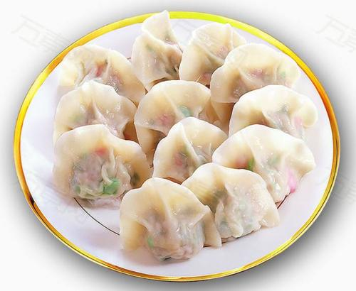

2021-5-9
水饺
先和面，然后醒面，这段时间内准备报喜欢的馅料，准备完成后，开始擀皮包饺子，形状大小根据个人喜好决定。
南北方的生活习惯不同，在北方习惯性水饺和饺子是同一种事物，但是在南方水饺是带汤汁的，要根据自己的喜好选择

2021-5-9
小笼包
准备猪皮冻，猪肉葱姜等佐料加清水搅打上劲，面粉加水和面死水面，包小笼包时将猪皮冻与猪肉馅混合，18褶，蒸笼蒸10分钟
南北方在小笼包的制作上存在差异，北方开封以猪皮冻产生汤汁，南方部分地区通过猪肉加水做馅，产生皮薄汁多的效果

2021-5-9
红烧肉
将五花肉切块冷水下锅，水烧开之后煮五分钟捞出。往锅内倒入少许油，放入肉块煸炒至锅中水烧干，肉块表面微黄之后加入料酒和酱油，继续翻炒均匀。锅中加入开水没过肉块，放入葱段、姜片、冰糖，小火焖煮30分钟左右收汁即可
2021-5-9
素炒西蓝花
西兰花切小朵;大蒜剥去蒜皮,拍碎剁成蒜末; 胡萝卜去皮洗净,切片; 西兰花、蘑菇、胡萝卜放入开水中氽烫30秒捞出; 锅中倒入20克油烧热,把蒜末爆香,再放入西兰花、洋菇、胡萝卜炒匀; 放入调味料(盐、味精)即可